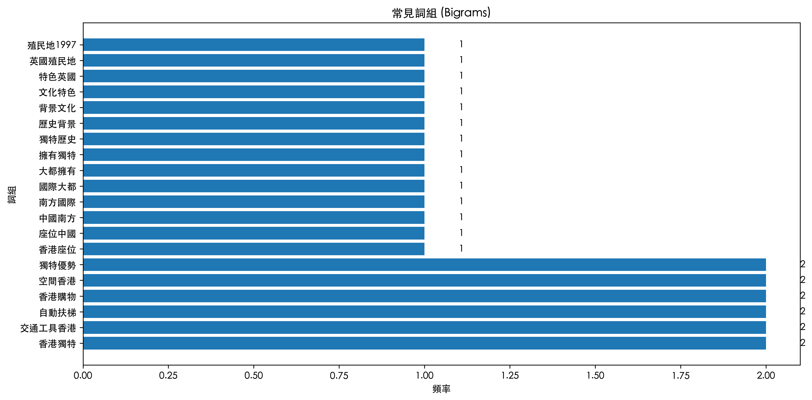
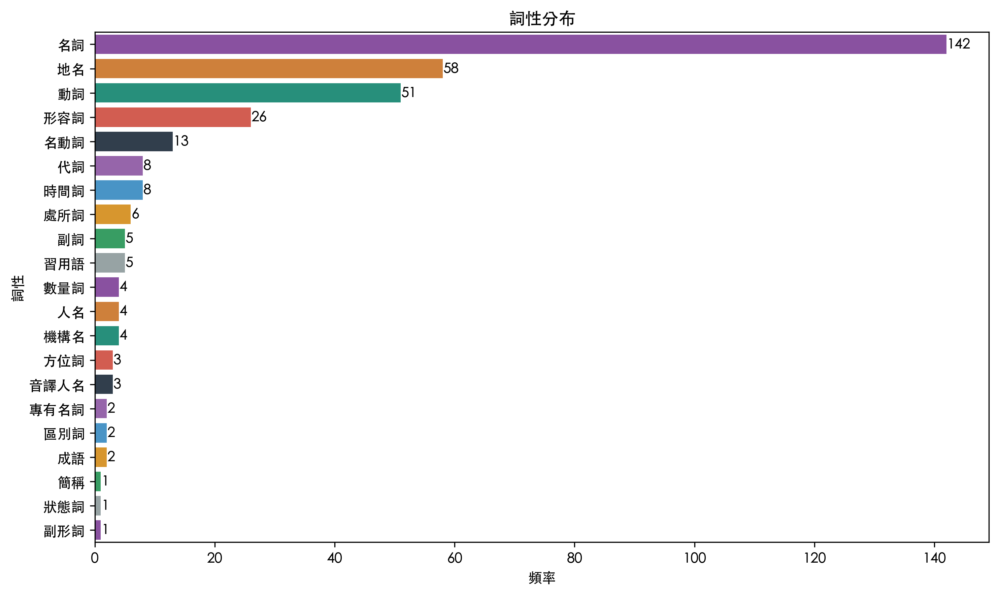
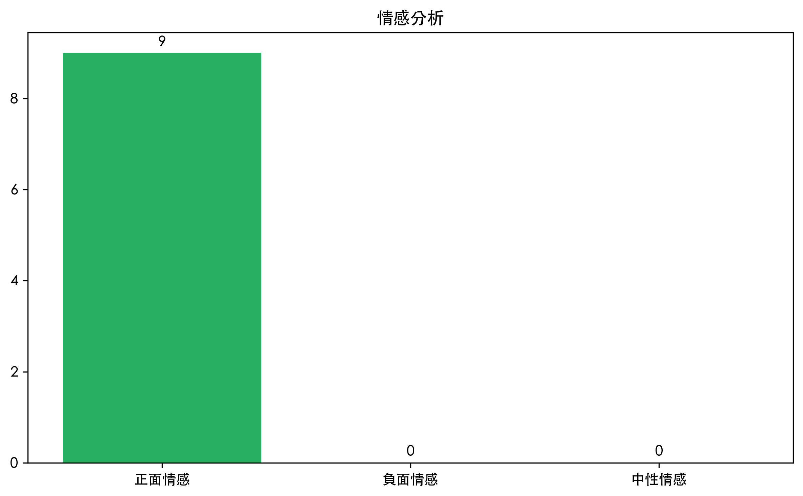
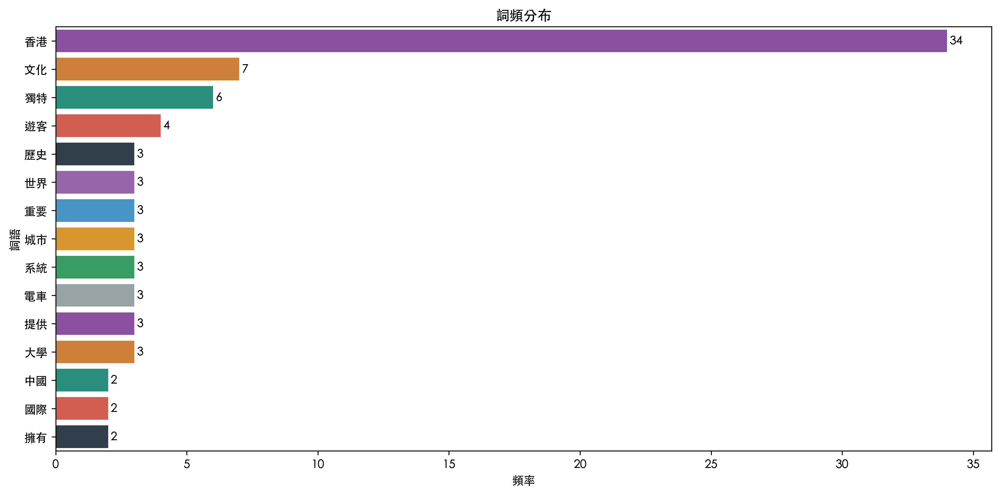
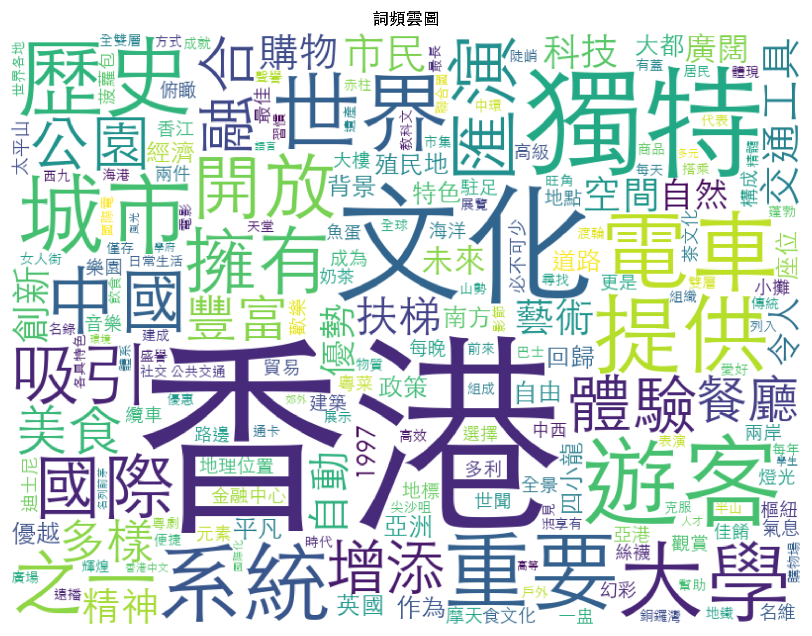

香港是一座位於中國南方的國際大都會，擁有獨特的歷史背景和文化特色。從英國殖民地到1997年回歸中國，香港走過了不平凡的歷史道路。作為亞洲四小龍之一，香港以其自由開放的經濟政策和優越的地理位置成為世界重要的金融中心和貿易樞紐。 香港的地標建築舉世聞名。維多利亞港兩岸的摩天大樓構成了香港標誌性的天際線，每晚的「幻彩詠香江」燈光音樂匯演吸引無數遊客駐足觀賞。太平山頂是俯瞰香港全景的最佳地點，纜車之旅更是遊客必不可少的體驗。香港迪士尼樂園和海洋公園則為這座城市增添了歡樂的氣息。 香港的飲食文化融合了中西元素，創造出獨特的美食體驗。從路邊小攤的魚蛋和雞蛋仔，到茶餐廳的菠蘿包和絲襪奶茶，再到高級餐廳的粵菜佳餚，香港的美食選擇豐富多樣。「一盅兩件」的早茶文化是香港人日常生活的重要組成部分，體現了香港獨特的飲食習慣和社交方式。 香港的公共交通系統高效便捷。八達通卡讓市民可以輕鬆搭乘地鐵、巴士、電車和渡輪等交通工具。香港的雙層電車是世界上僅存的全雙層電車系統之一，不僅是重要的交通工具，也是香港歷史的活見證。中環至半山自動扶梯系統是全球最長的戶外有蓋自動扶梯，每天幫助居民和遊客克服中環陡峭的山勢。 香港的購物天堂聲譽遠播。從銅鑼灣的時代廣場到尖沙咀的海港城，從旺角的女人街到赤柱市集，香港的購物場所各具特色。每年的香港購物節吸引來自世界各地的遊客前來尋找優惠和獨特商品。 香港的文化藝術蓬勃發展。西九文化區的建成為藝術愛好者提供了世界級的表演和展覽空間。香港國際電影節展示了香港電影的輝煌成就和創新精神。香港的粵劇已被列入聯合國教科文組織非物質文化遺產名錄，代表著香港傳統文化的精髓。 香港的教育體系享有盛譽。香港大學、香港中文大學和香港科技大學等高等學府在國際上名列前茅。香港的多元語言環境為學生提供了獨特的學習優勢，培養出大量國際化人才。 香港的郊外自然風光同樣令人嘆為觀止。從西貢的海岸線到南丫島的漁村，從大澳的棚屋到龍脊的徒步路線，香港擁有令人驚訝的自然景觀多樣性。香港郊野公園佔地廣闊，為市民提供了遠離都市喧囂的綠色空間。 香港的節慶活動展現了中西文化的融合。農曆新年期間的花市和煙花匯演，端午節的龍舟競渡，中秋節的燈籠會，以及西方節日如聖誕節和萬聖節，都為香港增添了豐富的文化色彩。 展望未來，香港正面臨著各種挑戰和機遇。隨著大灣區建設的推進，香港與內地城市的聯繫日益緊密，在創新科技、金融服務和文化創意等領域有著廣闊的發展前景。香港的獨特優勢和包容開放的精神，將繼續引領這座城市走向更加繁榮的未來。
視覺化分析
基礎分析圖表
命名實體統計

關鍵詞權重

N-gram詞組分析
詞性分布
情感分析
詞頻分布
詞頻雲圖
交互式圖表
綜合分析儀表板
交互式詞性-詞頻熱力圖
交互式詞語關聯網絡圖
交互式詞頻分析
詞頻樹狀圖
相似度分析
未進行相似度分析